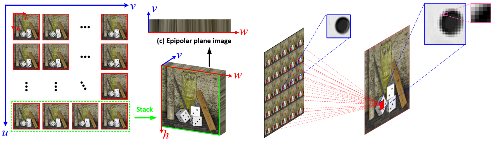
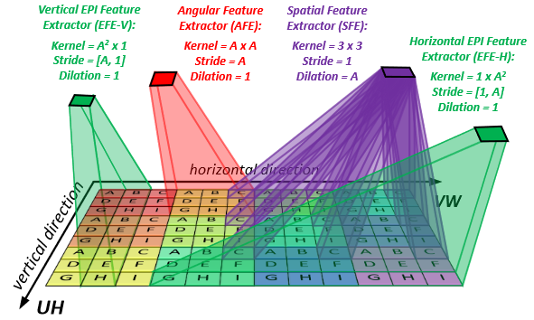
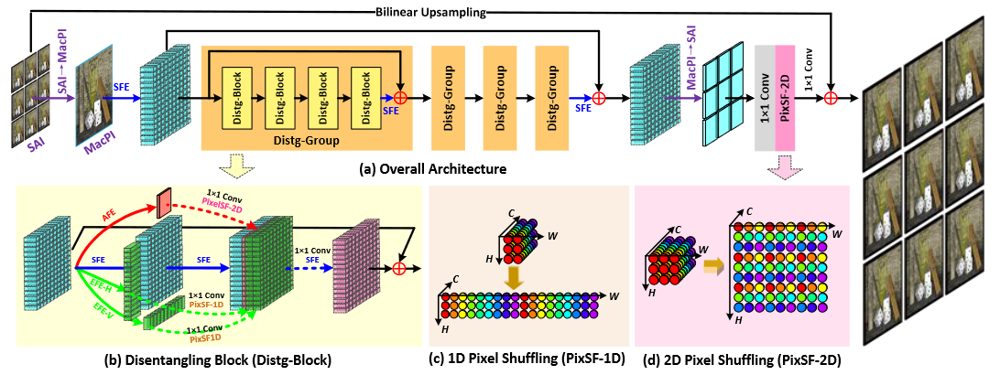
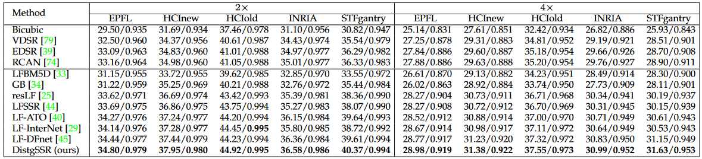
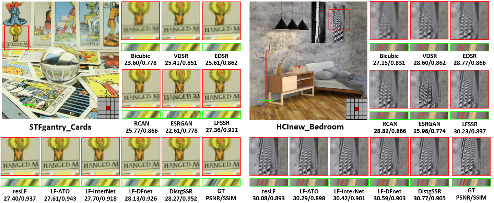
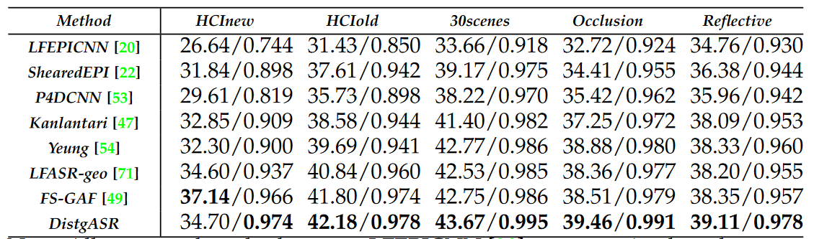
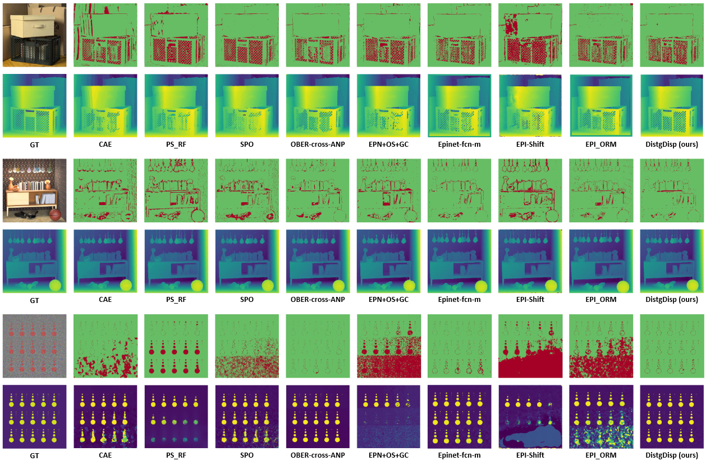

Disentangling Light Fields for Super-Resolution
and Disparity Estimation
Yingqian Wang1,
Longguang Wang1,
Gaochang Wu2,
Jungang Yang1,
Wei An1,
Jingyi Yu3, Fellow, IEEE,
Yulan Guo1, Senior Member, IEEE
1. College of Electronic Science and Technology, National University of Defense Technology
2. State Key Laboratory of Synthetical Automation for Process Industries, Northeastern University
3. School of Information Science and Technology, ShanghaiTech University
 |
|---|
Abstract
Light field (LF) cameras record both intensity and directions of light rays, and encode 3D cues into 4D LF images. Recently, many convolutional neural networks (CNNs) have been proposed for various LF image processing tasks. However, it is challenging for CNNs to effectively process LF images since the spatial and angular information are highly inter-twined with varying disparities. In this paper, we propose a generic mechanism to disentangle these coupled information for LF image processing. Specifically, we first design a class of domain-specific convolutions to disentangle LFs from different dimensions, and then leverage these disentangled features by designing task-specific modules. Our disentangling mechanism can well incorporate the LF structure prior and effectively handle 4D LF data. Based on the proposed mechanism, we develop three networks (i.e., DistgSSR, DistgASR and DistgDisp) for spatial super-resolution, angular super-resolution and disparity estimation. Experimental results show that our networks achieve state-of-the-art performance on all these three tasks, which demonstrates the effectiveness, efficiency, and generality of our disentangling mechanism.
The LF Disentangling Mechanism
|  |
|---|
Fig. 1: An illustration of the relationship between SAI, EPI and MacPI representations of a 4D LF. To convert an SAI array into a MacPI, pixels at the same spatial locations of each SAI need to be organized according to their angular coordinates to generate a macro-pixel. Then, the generated macro-pixels need to be organized according to their spatial coordinates.
|  |
|---|
Fig. 2: An illustration of the spatial, angular, and EPI feature extractors. Here, an LF of size U=V=3 (i.e., A=3), H=W=4 is used as a toy example. For better visualization of the MacPI, different macro-pixels are paint with different background colors while pixels from different views are denoted with different characters. The proposed feature extractors can disentangle LFs into different subspaces, i.e., an SFE convolves pixels in the same views, an AFE convolves pixels from the same macro-pixel, and an EFE convolves pixels on EPIs..
DistgSSR: Disentangling Mechanism for Spatial SR
|  |
|---|
Fig. 3: An overview of our DistgSSR network.
|  |
|---|
|  |
|---|
Fig. 4: Visual comparisons for 4×SR. The super-resolved center view images and horizontal EPIs are shown. The PSNR and SSIM scores achieved by different methods on the presented scenes are reported below the zoom-in regions.
Fig. 5: Depth estimation results achieved by SPO using 4×SR LF images produced by different SR methods. The mean square error multiplied with 100 (i.e., MSE×100) was used as the quantitative metric. Note that, the accuracy is improved by using the LF images produced by our DistgSSR.
DistgASR: Disentangling Mechanism for Angular SR
 |
|---|
Fig. 6: An overview of our DistgASR network. Here, we take the 2×2→7×7 angular SR as an example to illustrate the network structure
|  |
|---|
Fig. 7: Visual results achieved by different methods on scenes monasRoom (top) and IMG1555 (bottom) for 2×2→7×7 angular SR. Here, we show the error maps of the reconstructed center view images, along with two zoom-in regions and horizontal/vertical EPIs.
Fig. 8: Disparity estimation results achieved by SPO using LF images produced by different angular SR methods. The mean square error multiplied with 100 (i.e., MSE×100) was used as the quantitative metric. The accuracy is improved by using the LF images produced by our DistgASR.
DistgDisp: Disentangling Mechanism for Disparity Estimation
Fig. 9: An overview of our DistgDisp. The input 9×9 SAIs are first re-organized into a MacPI and fed to 8 spatial residual blocks for spatial information incorporation. Then, a series of disparity-selective angular feature extractors are introduced to disentangle the disparity information from the MacPI features to generate cost volumes. The generated cost volumes are further aggregated via a 3D hourglass module to regress the final disparity.
Fig. 10: The screenshot of the rankings on the HCI 4D LF benchmark (captured in July 2021). Our DistgDisp ranks the second to the fourth place among all the 81 submissions in terms of the average values of five mainly used metrics, and ranks the first place in terms of the average running time.
|  |
|---|
Fig. 11: Visual comparisons among different LF disparity estimation methods on the HCI 4D LF benchmark. For each scene, the bottom row shows the estimated disparity maps and the top row shows the corresponding BadPix0.07 maps (pixels with absolute error larger than 0.07 are marked in red.
Fig. 12: Performance on real-world LFs and extended applications on depth-assisted refocusing.
Demo Video
Materials

Citation
@Article{DistgLF,
author = {Wang, Yingqian and Wang, Longguang and Wu, Gaochang and Yang, Jungang and An, Wei and Yu, Jingyi and Guo, Yulan},
title = {Disentangling Light Fields for Super-Resolution and Disparity Estimation},
journal = {IEEE Transactions on Pattern Analysis and Machine Intelligence (TPAMI)},
year = {2022},
}
Contact
Any question regarding this work can be addressed to wangyingqian16@nudt.edu.cn.

|
|---|